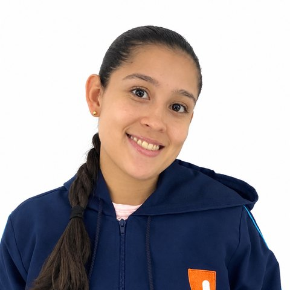

Imagen 16:9
Nombre de la entrada
Descripción provisional de la entrada destacada. Dos o tres líneas que resumen de qué trata la publicación.

Didáctica de las matemáticas · Primera infancia
Descripción provisional del blog. Aquí irá un párrafo breve que presenta el propósito del espacio y a quién está dirigido.
Nociones matemáticas
Texto de apoyo provisional para presentar las categorías del blog.
Ver todas las categoríasDescripción breve provisional de la noción.
00 actividadesDescripción breve provisional de la noción.
00 actividadesDescripción breve provisional de la noción.
00 actividadesDescripción breve provisional de la noción.
00 actividadesDescripción breve provisional de la noción.
00 actividadesDescripción breve provisional de la noción.
00 actividadesDescripción breve provisional de la noción.
00 actividadesTexto provisional para invitar a ver el listado completo.
00 actividadesBlog
Descripción provisional de la entrada destacada. Dos o tres líneas que resumen de qué trata la publicación.
Descripción provisional breve.
Descripción provisional breve.
Descripción provisional breve.
Jugamos y enseñamos
Texto provisional que presenta cómo se describe cada situación didáctica en el blog.
Variación provisional.
Variación provisional.
Recursos
Enfoque
Texto provisional que introduce los principios que orientan las propuestas del blog.
Descripción provisional de la orientación.
Descripción provisional de la orientación.
Descripción provisional de la orientación.
Descripción provisional de la orientación.
Descripción provisional de la orientación.


Quiénes somos
Texto provisional de presentación del grupo que escribe el blog.